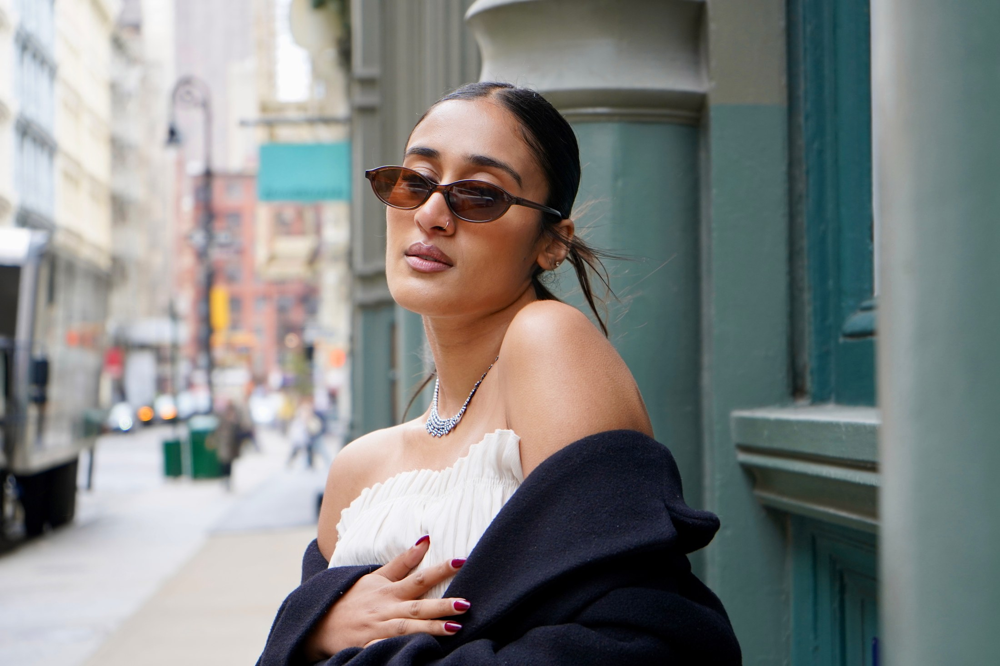
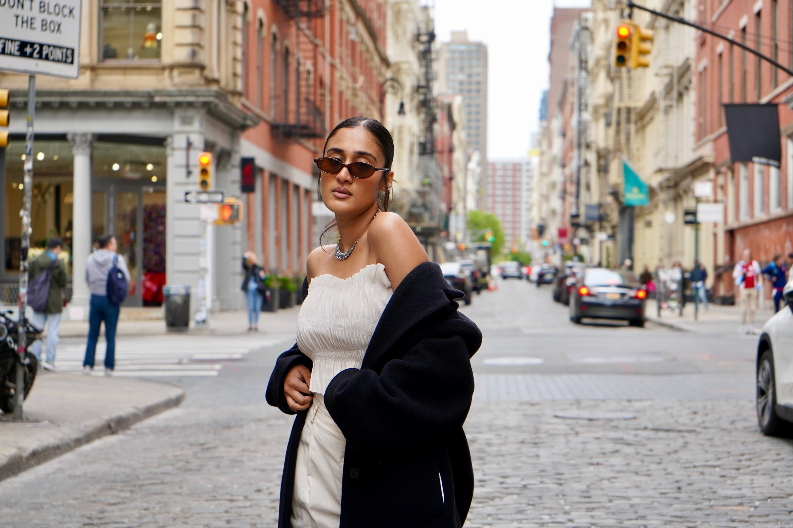
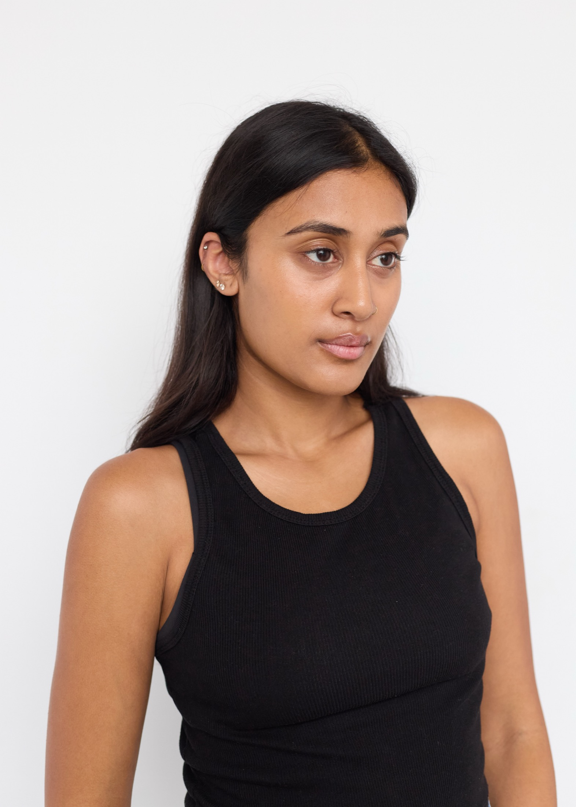
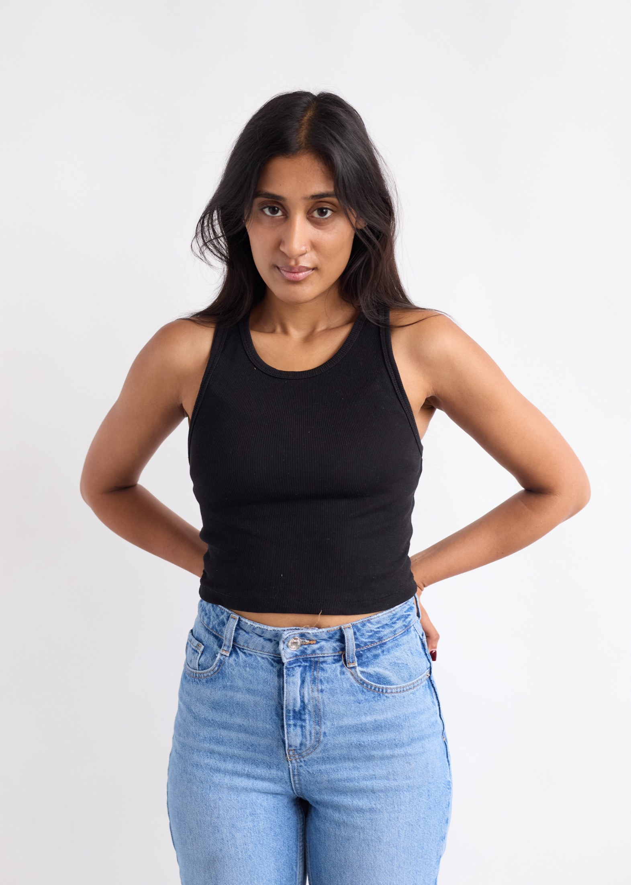
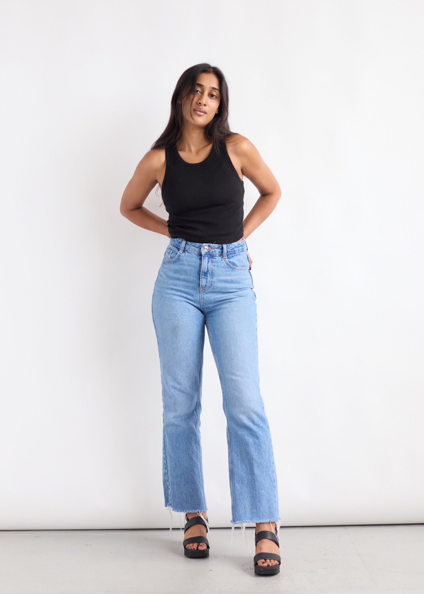
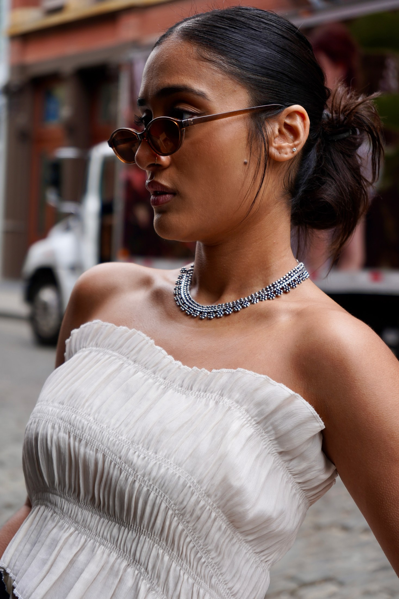
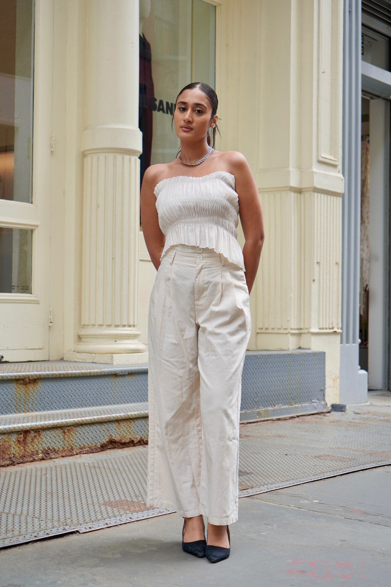

Film · Lead
Rushed
A character-led short following a girl who is constantly late to life and exhausted by the pressure to keep up with shifting trends and rules.
NYC Actor & Model
Grounded screen presence, method training, and a sharp contemporary energy for film, television, fashion, and commercial work.

About
Raagini is currently training in the 2-Year Conservatory at the Lee Strasberg Theatre & Film Institute, with additional Meisner study at The Acting Studio. Her work spans lead and supporting short film roles, Netflix background experience, and modeling credits from New York Fashion Week to editorial studio campaigns.
Selected Work
Film · Lead
A character-led short following a girl who is constantly late to life and exhausted by the pressure to keep up with shifting trends and rules.
Film · Supporting
Played Zeenat, Anya's cousin from a Pakistani family, an architecture student navigating school, family, and a smoking addiction.
Television · Background
Background actor experience on a professional streaming television set.
Television · Background
Background actor experience contributing to set movement and lived-in worldbuilding.
Runway
Modeled for 1127 during New York Fashion Week through The Model Experience fashion show.
Editorial / Commercial
Modeled for BALM Studio's NYC rebrand with a transportation theme and city-based visual direction.

Presence
Training
2-Year Conservatory with Method Acting, Acting on Film/TV, Movement for Method Actors, Acting on Camera, Vocal Production, Singing for the Actor, and Scene Study.
Ana Lima · Marcel Simoneau · Tim Crouse · Robert Ellerman · Madeline Jaye · Bill Hopkins · Bruce Baumer · Michael Ryan
Introduction to Meisner with James Price.
Range
Photos
Model Digitals
Clean studio references for proportions, face, profile, and current look.



Editorial / NYC
Street portraits with styling, movement, attitude, and a stronger sense of character.


Contact